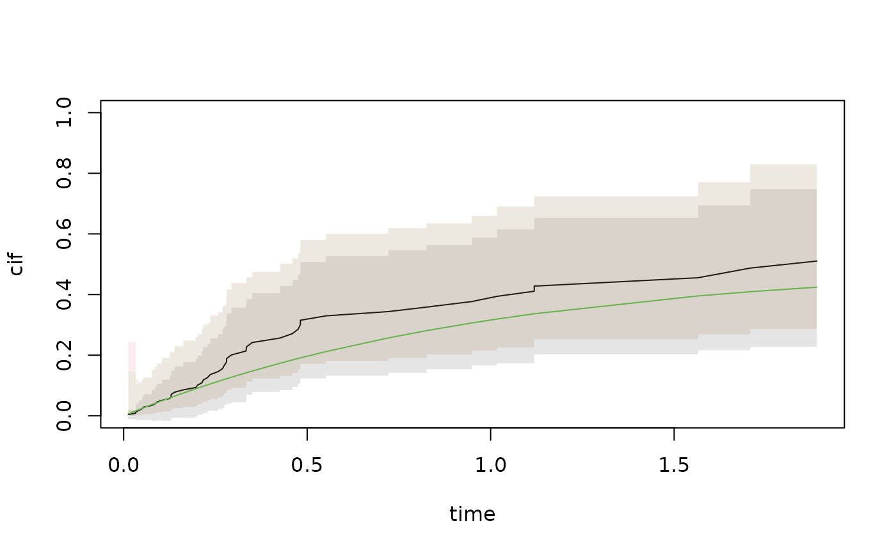

wild bootstrap for uniform bands for Cox models
Usage
Bootphreg(
formula,
data,
offset = NULL,
weights = NULL,
B = 1000,
type = c("exp", "poisson", "normal"),
...
)References
Wild bootstrap based confidence intervals for multiplicative hazards models, Dobler, Pauly, and Scheike (2018),
Examples
n <- 100
x <- 4*rnorm(n)
time1 <- 2*rexp(n)/exp(x*0.3)
time2 <- 2*rexp(n)/exp(x*(-0.3))
status <- ifelse(time1<time2,1,2)
time <- pmin(time1,time2)
rbin <- rbinom(n,1,0.5)
cc <-rexp(n)*(rbin==1)+(rbin==0)*rep(3,n)
status <- ifelse(time < cc,status,0)
time <- ifelse(time < cc,time,cc)
data <- data.frame(time=time,status=status,x=x)
b1 <- Bootphreg(Surv(time,status==1)~x,data,B=1000)
b2 <- Bootphreg(Surv(time,status==2)~x,data,B=1000)
c1 <- phreg(Surv(time,status==1)~x,data)
c2 <- phreg(Surv(time,status==2)~x,data)
### exp to make all bootstraps positive
out <- pred.cif.boot(b1,b2,c1,c2,gplot=0)
cif.true <- (1-exp(-out$time))*.5
with(out,plot(time,cif,ylim=c(0,1),type="l"))
lines(out$time,cif.true,col=3)
with(out,plotConfRegion(time,band.EE,col=1))
with(out,plotConfRegion(time,band.EE.log,col=3))
with(out,plotConfRegion(time,band.EE.log.o,col=2))
